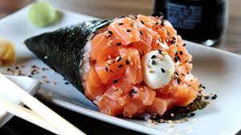
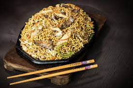

Origem
Não há palavras para descrever o sabor e a sofisticação da comida oriental e ao mesmo tempo a simplicidade e a praticidade da mesma.
O alimento teve origem séculos atrás e ganhou toda a Ásia mas foi aprimorado no Japão onde chegou 200 anos a.C.
Porque Sushi?
As pessoas comem sushi por diversos motivos. O sushi é um alimento saboroso, saudável, variado, culturalmente interessante, visualmente atraente e social. Se você ainda não experimentou, vale a pena dar uma chance!
Sabor: O sushi é uma combinação de sabores e texturas que agrada a muitos paladares. A frescura do peixe cru, o arroz temperado com vinagre, a alga marinha e outros ingredientes criam uma experiência gastronômica única.
Saúde: O sushi é considerado um alimento saudável, pois é rico em proteínas, ômega-3, vitaminas e minerais. Além disso, é baixo em calorias e gorduras saturadas.
Variedade: Existem diversos tipos de sushi, desde os mais tradicionais, como o sashimi e o nigiri, até os mais criativos, como os uramakis e os temakis. Essa variedade permite que as pessoas encontrem opções que se encaixam em seus gostos e preferências.
Como Escolher?
Se você gosta de peixe cru, experimene o sashimi ou o nigiri.

Se você pefere algo mais cozido, experimente o hot roll ou o uramaki.

Se você gosta de sabores mais intensos, experimente o temaki com maionese ou o uramaki com cream cheese.
Se você prefere sabores mais suaves, experimente o nigiri com salmão ou o uramaki com pepino ou o Califórnia.

Se você gosta de algo mais calórico experimente a Yaksoba ou o Tempurá.
